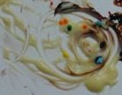

Children love to create, experiment and use their imagination. Edible paint is so much fun for young children to explore texture and taste and create art at the same time! Kids will love splattering paint and they can even paint with their feet and bodies. This is a great activity for outdoors. In the summer you can simply hose the kids down when it’s time to clean up! Kool-Aid Paint Get ready!![]() 2 cups flour 2 packs unsweetened Kool-Aid 1/2 cup salt 3 cups boiling water 3 tablespoons oil Get set! Mix the wet ingredients into the dry ingredients. Go paint! Jello Paint ![]() Get ready! Get ready!Flavored jello Boiling water Get set! Mix jello into boiling water until it is a gooey consistency. Go paint! Paint on glossy paper for an extra special painting! Pudding Paint Get ready! Instant Vanilla Pudding Food Coloring Get set! Mix pudding according to directions. Add food coloring for desired color. Go paint! Paint on paper plates or waxed baking paper. Cookie-painting with edible paint Your kids will love making edible paint! Children of all ages like to experiment using their imagination. This activity combines kitchen fun and painting. This is a great activity for both indoors and outdoors. When it's warm and sunny out, you can hose the kids down when they are done... another great activity! There are many different ways of painting, which makes it a different experience for children of all ages. Painting is great for helping kids develop coordination. Try using different kitchen utensils such as spoons, forks, and straws. Paint on a plate! Paint on a table! If it's important for you to "contain" the messiness... young toddlers and babies can paint in their high chair while wearing a bib. This is one kind of paint you won't mind them eating and putting in their mouth! |